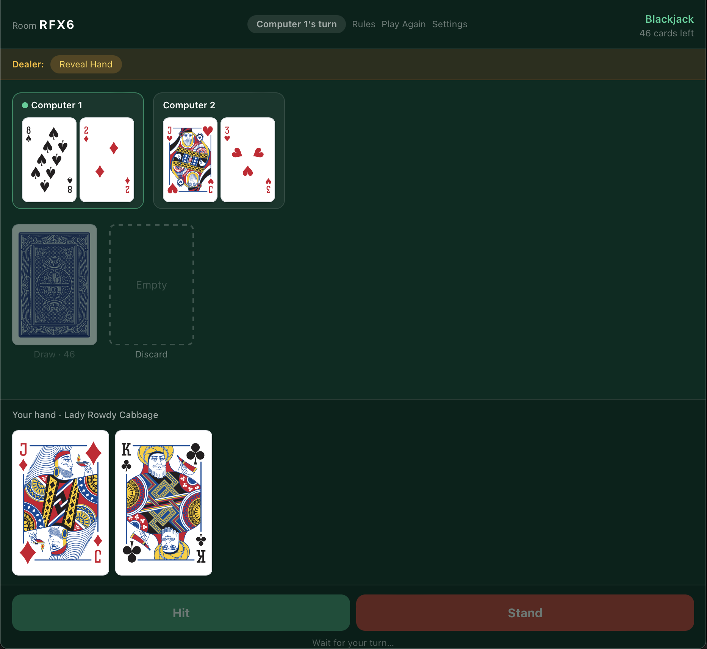

Cards with Friends
An app for playing card games remotely, built with React and Supabase using Claude Code. The real goal is flexibility: getting as close as possible to what a physical deck of cards can do, where you can play any game and bend the edit rules on the fly. Long term, the idea is to configure entirely new games through prompting, not hard-coded rule sets. (Deck illustrations are their own case study, see Standard American Playing Cards case study.)

Check out WIP app →Tooling
- Claude Code
- Github
- Supabase
Status
- Main application functionality working
- Test rooms working, history and settings added
- Blackjack game fully functional
- Addressing game mechanics, rules and rule changing
- Improve aesthetics, less clunky UI
Building this is as much about practicing a working relationship with an AI coding tool as it is about the app itself. I want to stay in the driver's seat rather than defaulting to "yes, install this for me" on every prompt. If it's a command I already know, I type it myself instead of auto-accepting. When it comes to things like environment secrets, I ask it to walk me through how they actually work and what could go wrong if I get them wrong, rather than treating them as a black box to trust. Along the way I'm picking up real working knowledge I didn't have before: how YAML files and deployment jobs fit together, and a much better grasp of working with databases. Small habits, but the kind that keep me actually learning instead of just shipping.